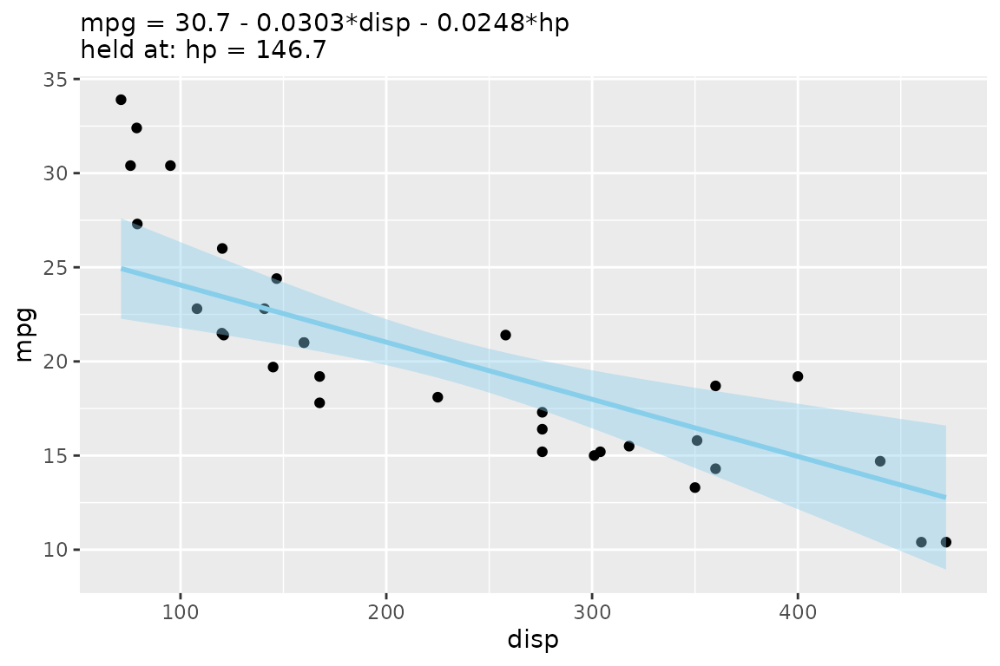
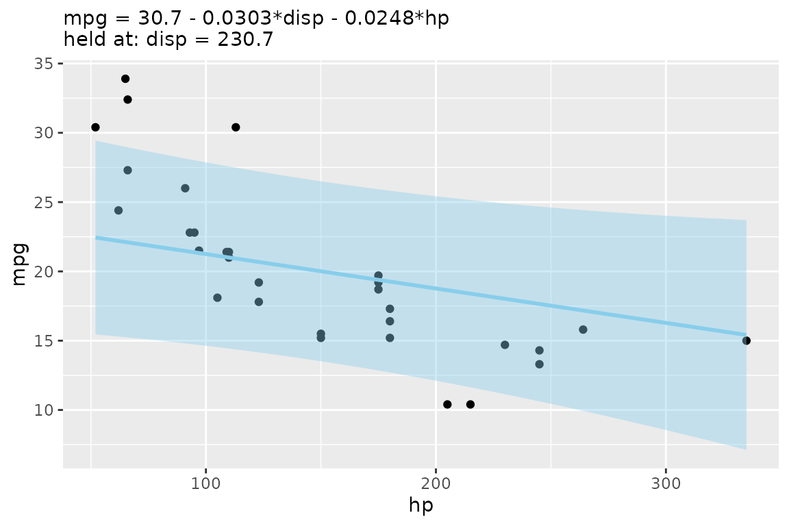
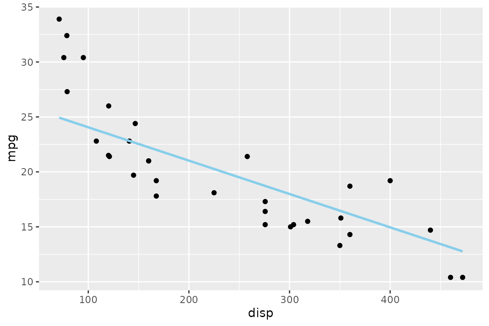
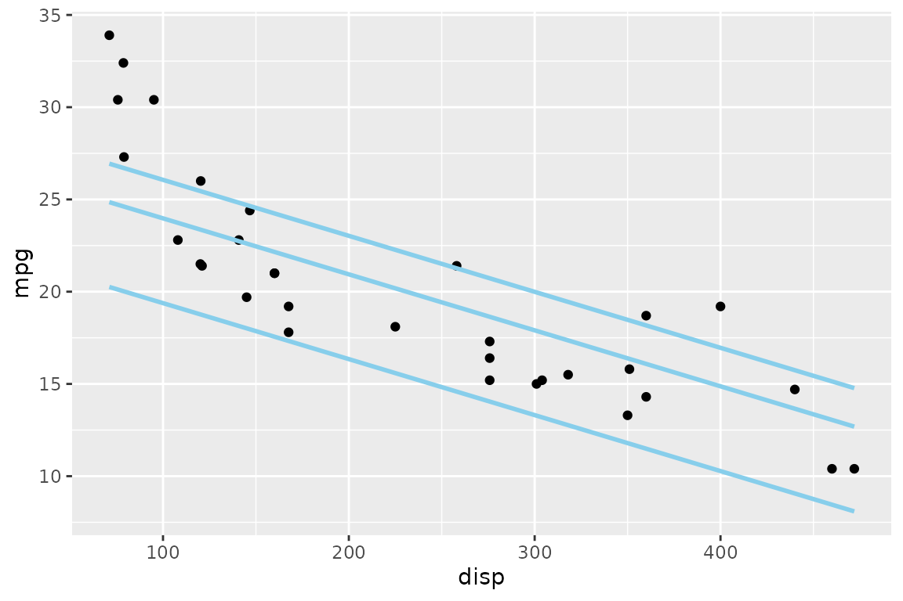
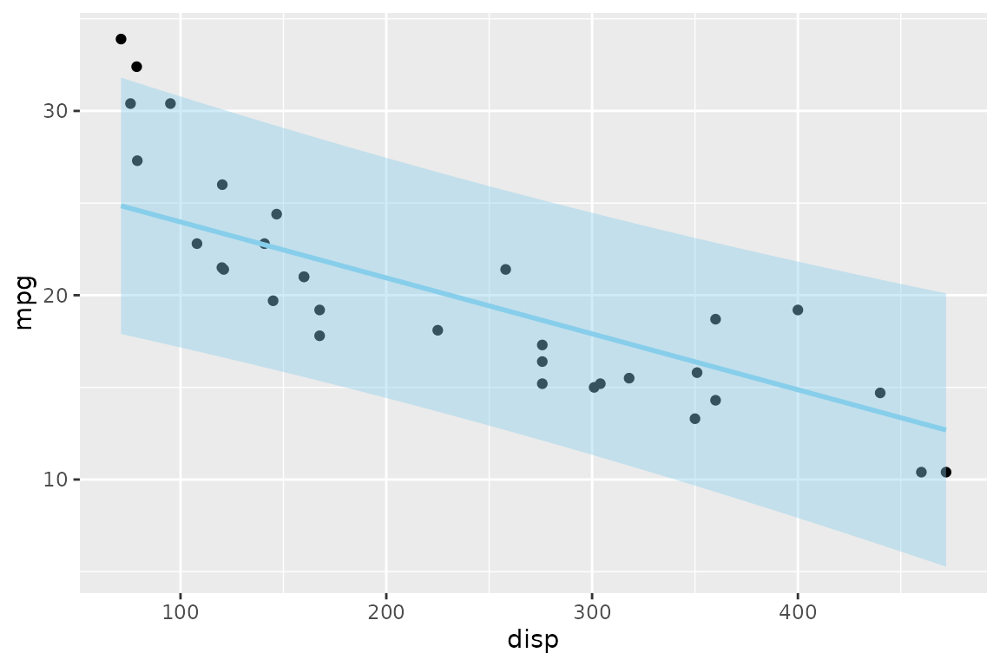
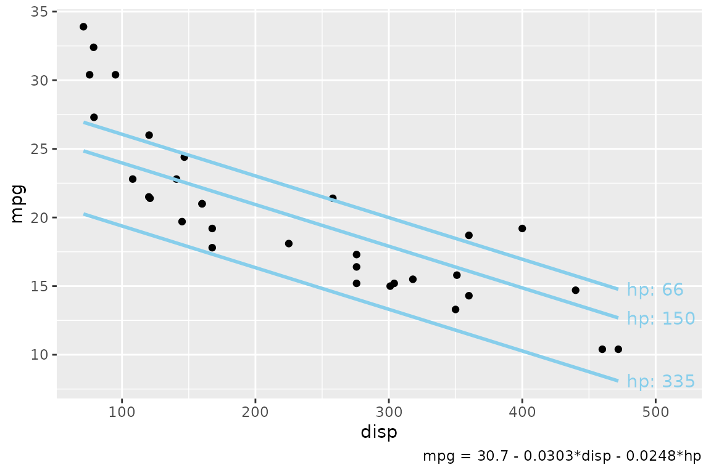
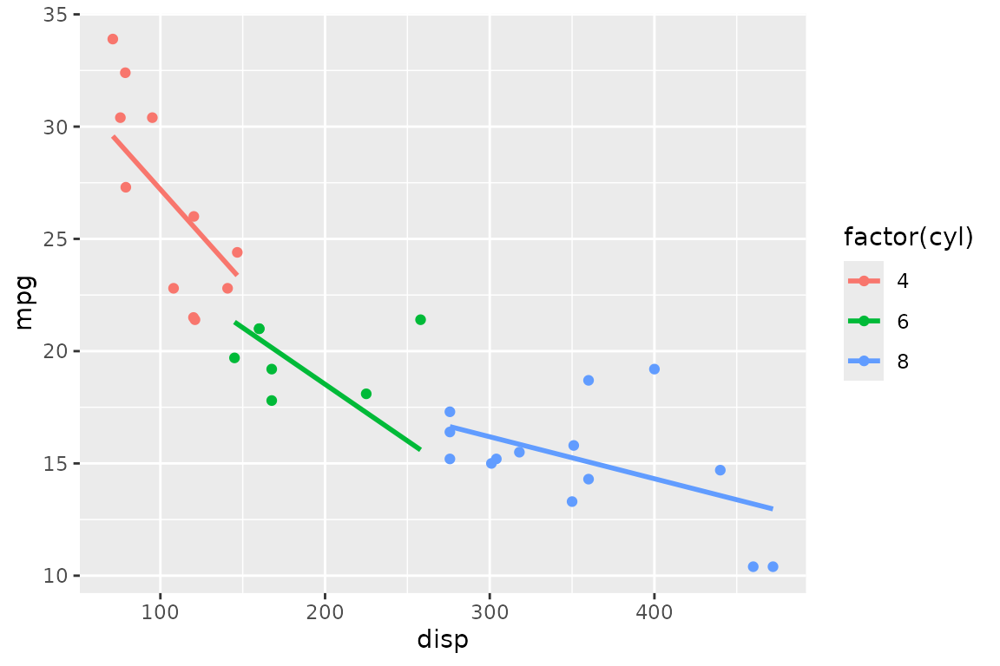

A fitted linear model with more than one predictor lives in more
dimensions than a scatterplot can show. The usual workaround —
geom_smooth(method = "lm") — quietly fits a
different, single-predictor model to the plotted variables, so
the line on the screen is not the model you summarized.
Applr draws the model you actually fit. Its core idea is the
slice: hold every predictor except one at a fixed
value, and draw the model’s predictions as that one predictor varies.
This vignette walks through the workflow on a single dataset,
mtcars.
Fit a model, then autoplot() it
Start with a model where mpg depends on two
predictors:
model <- lm(mpg ~ disp + hp, data = mtcars)
lm_equation(model)
#> [1] "mpg = 30.7 - 0.0303*disp - 0.0248*hp"autoplot() is the quickest way to see it. It rebuilds
the scatterplot from the model’s own data, picks the first numeric
predictor for the x-axis, and adds a slice line with its confidence
ribbon — plus a subtitle recording which values the other predictors
were held at:
autoplot(model)
#>
#> Call:
#> lm(formula = mpg ~ disp + hp, data = mtcars)
#>
#> Residuals:
#> Min 1Q Median 3Q Max
#> -4.7945 -2.3036 -0.8246 1.8582 6.9363
#>
#> Coefficients:
#> Estimate Std. Error t value Pr(>|t|)
#> (Intercept) 30.735904 1.331566 23.083 < 2e-16 ***
#> disp -0.030346 0.007405 -4.098 0.000306 ***
#> hp -0.024840 0.013385 -1.856 0.073679 .
#> ---
#> Signif. codes: 0 '***' 0.001 '**' 0.01 '*' 0.05 '.' 0.1 ' ' 1
#>
#> Residual standard error: 3.127 on 29 degrees of freedom
#> Multiple R-squared: 0.7482, Adjusted R-squared: 0.7309
#> F-statistic: 43.09 on 2 and 29 DF, p-value: 2.062e-09
#> Value for `hp` not specified - Used mean: 146.7
#> To choose a slice, use 'predict_vars = list(hp = 146.7)'.
The message tells you what happened: hp was not on an
axis, so the line holds it at its mean. Use
mapping = aes(x = ...) to slice along a different
predictor, and pass any geom_slice() argument through
...:
autoplot(model, mapping = aes(x = hp), interval = "prediction")
#>
#> Call:
#> lm(formula = mpg ~ disp + hp, data = mtcars)
#>
#> Residuals:
#> Min 1Q Median 3Q Max
#> -4.7945 -2.3036 -0.8246 1.8582 6.9363
#>
#> Coefficients:
#> Estimate Std. Error t value Pr(>|t|)
#> (Intercept) 30.735904 1.331566 23.083 < 2e-16 ***
#> disp -0.030346 0.007405 -4.098 0.000306 ***
#> hp -0.024840 0.013385 -1.856 0.073679 .
#> ---
#> Signif. codes: 0 '***' 0.001 '**' 0.01 '*' 0.05 '.' 0.1 ' ' 1
#>
#> Residual standard error: 3.127 on 29 degrees of freedom
#> Multiple R-squared: 0.7482, Adjusted R-squared: 0.7309
#> F-statistic: 43.09 on 2 and 29 DF, p-value: 2.062e-09
#> Value for `disp` not specified - Used mean: 230.7
#> To choose a slice, use 'predict_vars = list(disp = 230.7)'.
Build the plot yourself with geom_slice()
For full control, add geom_slice() to an ordinary
ggplot. The layer reads the plot’s aes() to learn which
predictor is on x, and predicts from your model — no separate model is
fit:
ggplot(mtcars, aes(x = disp, y = mpg)) +
geom_point() +
geom_slice(model)
#> Value for `hp` not specified - Used mean: 146.7
#> To choose a slice, use 'predict_vars = list(hp = 146.7)'.
Choosing the slice
predict_vars pins the off-axis predictors to values you
choose instead of their means. Give a predictor several values and you
get one line per value — a small multiple of slices through the same
model:
ggplot(mtcars, aes(x = disp, y = mpg)) +
geom_point() +
geom_slice(model, predict_vars = list(hp = c(66, 150, 335)))
Intervals
interval = "confidence" or "prediction"
shades the corresponding predict.lm() interval around each
line:
ggplot(mtcars, aes(x = disp, y = mpg)) +
geom_point() +
geom_slice(model, predict_vars = list(hp = 150), interval = "prediction")
Labeling the slices
Three companion helpers describe the slices on the plot itself, so a reader can tell which line is which and what was held constant.
geom_slice_text() labels the end of each line with its
held value; geom_slice_caption() writes the slice
description under the plot:
ggplot(mtcars, aes(x = disp, y = mpg)) +
geom_point() +
geom_slice(model, predict_vars = list(hp = c(66, 150, 335))) +
geom_slice_text() +
geom_slice_caption()
(geom_slice_subtitle() is the third helper — it puts the
model equation and held values in the subtitle, and is what
autoplot() uses by default.)
Grouping and faceting
Slices respect the plot’s grouping and faceting. With a model that includes the grouping variable, each group gets its own correctly-sliced line:
model_cyl <- lm(mpg ~ disp * cyl, data = mtcars)
ggplot(mtcars, aes(x = disp, y = mpg, color = factor(cyl))) +
geom_point() +
geom_slice(model_cyl)
Where to go next
-
?geom_slicecovers the remaining options: projection bands (band), extending lines across the panel (full_range), transformed responses andback_transform, and thenresolution of the line. -
?slice_2dis the base-graphics equivalent of this whole workflow. -
?scatter_3d(orautoplot(model, type = "3d")) shows a two-predictor model as an interactive 3-D surface instead of a slice. -
?lm_equationand?lm_latexturn the fitted model into text or LaTeX for reports.